|
Saturday the 12
Timpanogos West Face
My man Powstash skied this line last week
with Trackhead and it's been pretty much all I could think of since
I heard about it Thanks guys for the inspiration!
To allow for
maximum sleepage, we slept the night before in Helmut's van at
the put in. What we didn't
know then, but know now, is not to try to sleep there. The dry canyon trail
head parking lot is a thriving late night hotspot for "star gazers" and for
throwing used condoms out the window.
In the darkness of 5 am we hit the trail. Then,
at about 5:30 we realized that we weren't on the trail at all,
but were bushwacking
through dry canyon creek. The proper trail was high above us to
the north. Once we regained the proper route our thoughts turned
towards when
we
would reach the snow line so we could lighten our packs. Unfortunately
we had to gain just under 2000 vtf before
we could
strap
on
the boards. From there it was challenging skinning and the occasional
cramponing directly up our descent route.
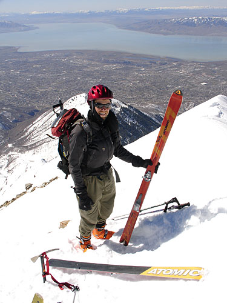
Helmut acting like he's sponsored by atomic
before dropping in from the summit ridge.
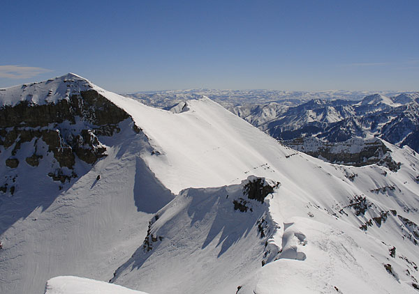
Beautimus line to return to and ski next
year. We watched someone ski the line alone. His loudly icy sounding
turns weren't comforting.
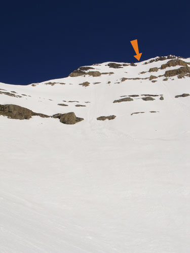
Here's the really scary line we skied and
a huge orange arrow. The skiing from the top would have been good
corn if we waited about 2 hours till 1:00. We waited
about 5 minutes, got bored and
skied the ice. Probably a good thing as the corn below was just
perfect.
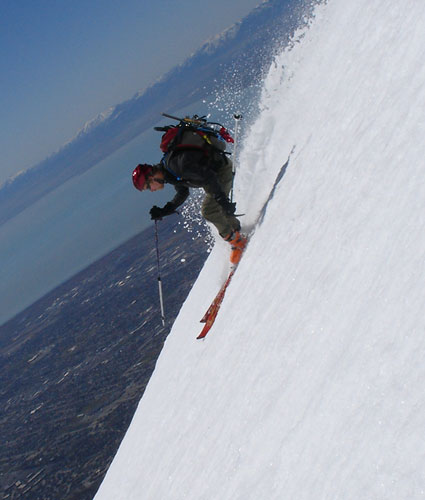
Dude, it was, like, so steep! It was like
80 degrees! Here's proof!
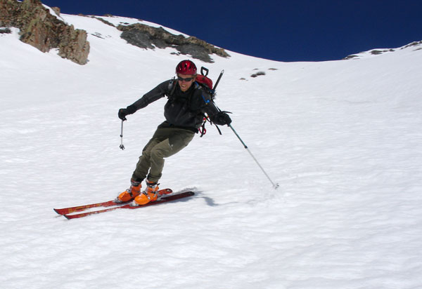
I likes corn, and it looks like helmüt does too.
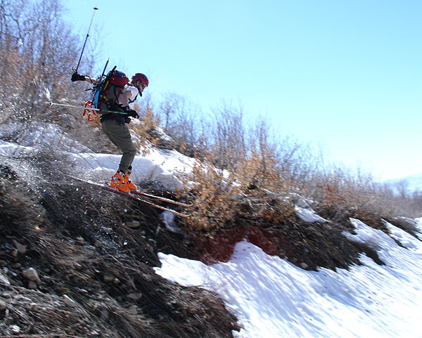
The real crux of the skiing came down low
on a terminally ill snow vein. There were intermittent gap jumps
and really pointy sticks.
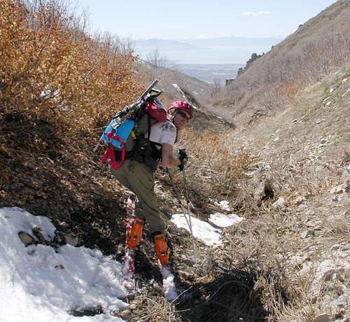
Helmut experimented with riding across a
steep mud embankment. Suprisingly, his skies stopped dead in the
dirt and he launched into the best cartwheel down a rocky slope
I've seen since mountainbiking season. If only I had the camera
out!
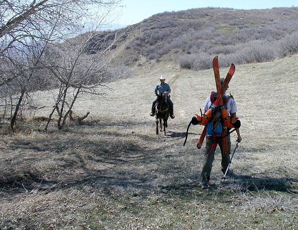
Ya see all sorts on the Dry Canyon trail.
But if you don't see any freaks, then you're the freak.
Sunday, the 6th
Days End
Good thing about 2+ weeks of no new snow
is that it entices you to go new places. That's how we ended up
on days end. I don't know what it's really called, but it's
pretty much the last big avy drainage on the right as your skiing
out of days draw. 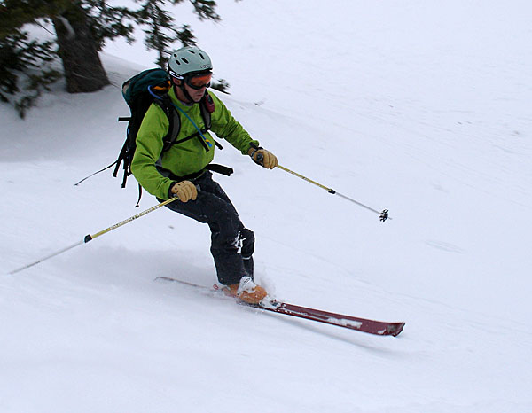
Professor Rag looking smooth but somewhat
like the grinch at the bottom of Days End.
Saturday, the 5th
Bonkers
It's been two weeks since a decent snowfall,
but today the freak and his team managed to ski one of the best
runs of the year. Bonkers. When you first lay eyes on it you can
hear the clashing of symbols and the yodeling of angels, just like
in the movies. Then you start going up. Then you keep going up.
And continue going up. You reach a saddle and get the amazing view
straight down stairs gultch to Big Cottonwood road 5000 feet or
something below you. Then you continue going up. When you reach
the top you look down the run and think really big and happy thoughs,
like "wow!" for example. If you're lucky, the steeper
top 600 feet are covered in deep, soft, feathery surface hoar crystals.
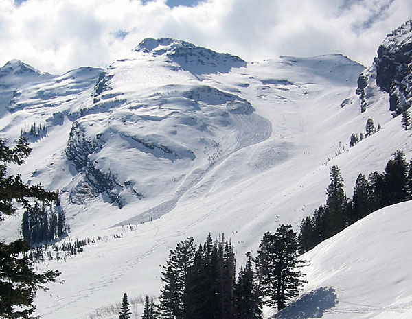
Bonkers. Gotta love Bonkers. Bonkers. Bonkers.
Bonkers. (photo Prof. Ragdoll)
Prominent north east gully chute
between west and main porter fork. Highly visible from Mt. Aire.
The approach was our first taste of the icy, slippery skin tracks
of spring this season. Our nerves fried from the unexpected slips
that would wake us from the otherwise calm climb.
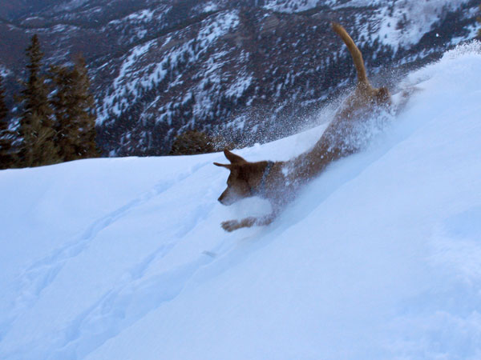
Supa Boo heads north above West Porter Fork.
Tuesday the 1st
Sleep walk up scotts bowl
Well, couldn't wake up this morning,
but we skied Scott's bowl anyway. Despite the fact that it looked
like Alta after a powder day, there were still some soft lines
left. This avalanch path is apparently now on everyone's radar
as bushwacking is no longer mandatory. |